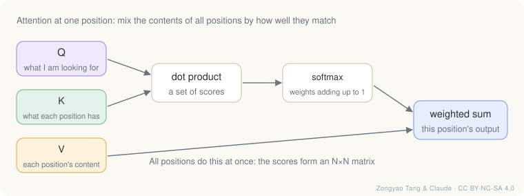
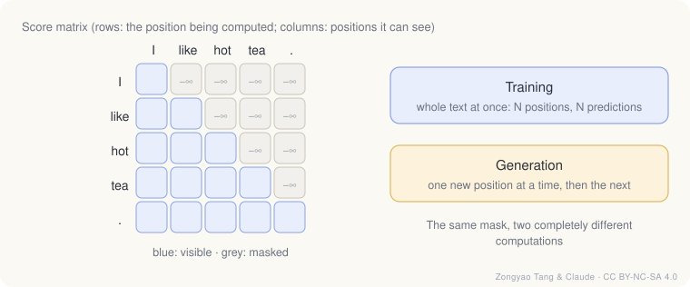
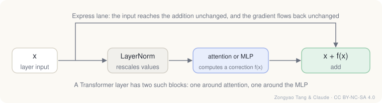

The thread: the core of the Transformer is letting each position take information directly from every other position, which is attention → a language model must not peek at later words, hence the causal mask, which makes training and generation very different → stacking such layers tens or hundreds deep relies on residual connections and normalisation → finally, multiple heads: looking in several ways at once. As you read, watch the "So…" of each card; they lead to 4.4, 9.1 and 4.1 respectively.
Part 1 · Principles of deep learning1.4 The Transformer
Translated by AI (Anthropic's Claude) from the Chinese edition. The Chinese original is the reference.
This unit answersHow does a Transformer let each word "see" its context? Why can it be stacked so deep and made so large?
Follows 1.1–1.2: the training method stays the same; the network's structure becomes attention.
- Attention is a "soft" table lookup
- The causal mask: training processes a whole text in parallel, generation goes word by word
- Residual connections: a through lane for signals and gradients
- Multi-head attention: looking in several different ways at once
Explanation
1Attention is a "soft" table lookup
Each position produces a query (Q), a key (K) and a value (V). Its Q is dotted with the K of every position, softmax turns the results into weights, and the V's of all positions are added up with those weights. The more relevant a position is to your question, the larger the share of its information.
The problem to solve. Understanding one word in a sentence often needs information from elsewhere in the sentence: what "it" refers to, which meaning an ambiguous word takes here. Each position needs a way to fetch the information relevant to it from the other positions.
The lookup metaphor. An ordinary lookup: take a key, find the identical key in a dictionary, and take out its value. Attention is the "soft" version of this:
- Each position issues a query (Q): what kind of information I am looking for.
- Each position offers a key (K): what kind of information I have here.
- Each position also has a value (V): what I give you if you want it.
Q, K and V are each obtained by multiplying the position's current representation by a matrix, and these three matrices are learned.
The computation. For one position:
- Dot its Q with the K of every position to get a set of scores. The larger the dot product, the better "what I am looking for" matches "what you have".
- Apply softmax to the scores, turning them into weights that add up to 1.
- With these weights, take the weighted sum of the V's of all positions. This is the position's output.

Q and K decide "whom to look at, and how much"; V decides "what is fetched" It is "soft" because it does not take only the best match but a mixture of all positions according to how well they match; and the whole process is differentiable, so it can be trained by backpropagation.
All positions do this at the same time. In matrix form: scores = Q × Kᵀ (N×N), output = softmax(scores) × V.
Compared with RNNs. Before the Transformer, sequences were processed by recurrent networks: information starts at the first position and is passed along one position at a time.
- Distance: in an RNN, information between two words 100 positions apart travels 100 steps and is diluted along the way. In attention any two positions are one step apart.
- Parallelism: an RNN must finish position t before it can compute position t+1; it is serial by nature, and a GPU cannot help. In attention all positions are computed at once, as a few matrix multiplications, exactly what GPUs do best. That the Transformer could scale to today's sizes has a lot to do with how well it suits parallel hardware.
The cost. Every position computes a score with every position: N×N. Double the sequence length and both the arithmetic and the size of this intermediate matrix become four times as large.
- The square in arithmetic is simply paid for with compute.
- Reading, writing and storing the intermediate matrix is what Flash Attention in 4.4 solves: it shows that this matrix need never actually be written out.
- Longer still, and the sequence has to be cut along its length across several GPUs (context parallelism, 7.3).
Position information. Attention by itself does not know which word comes first (a weighted sum does not depend on order). So an encoding of position has to be added to the input.
An analogyLike researching in a library: compare your question (Q) with each book's label (K); the more relevant the book, the more of your notes (V) come from it.
So every position can take information directly from any position, without passing it along step by step as an RNN does; the price is an N×N matrix of scores, and as sequences get longer, computation and memory grow with the square. This is exactly the problem Flash Attention solves in 4.4.
- Using attention for a language model comes with one rule that must be kept.
2The causal mask: training processes a whole text in parallel, generation goes word by word
When the decoder predicts the next word, it must not peek at the words after it. This is done by setting the scores of "future positions" in attention to minus infinity, so their weights after softmax are 0. Then the predictions at every position of a text can be computed at the same time.
The language model's task. Given the words so far, predict the next one. The training data is a large amount of text: for each position in a text, what comes before is the input, and the word actually at this position is the answer.
The rule. When predicting word t, the model may not use word t or anything after it; otherwise it would be answering with the answer in view. But attention lets each position see every position, including later ones.
The mask. Before the softmax, change the scores that correspond to "later positions" in the score matrix to minus infinity. After the softmax those positions have weight 0, as if absent. Position t then takes information only from positions 1 to t. The score matrix is N×N, and what is masked out is its upper triangle.

What is masked is the upper triangle of the score matrix Training: all positions computed at once. Feed a whole text of N words into the model. With the mask, the output at position t depends only on the first t words, so it can legitimately be used to predict word t+1. The outputs at all N positions are computed together, giving N predictions and N losses at once. One text is the equivalent of N training samples, and the computation is done in one go, as large matrix operations. This is called teacher forcing: the "preceding text" each position sees is the real text.
Generation: one at a time. In generation there is no text yet. The first word has to be computed and appended to the input before the second can be computed, and so on. The input of step t+1 depends on the output of step t, and this dependency cannot be parallelised.
One model, two completely different computations.
Training Generation Processed at once All positions of a whole text One new position Main operation Large matrix × large matrix Large matrix × vector Bottleneck Compute (and bandwidth for the other operators) Memory bandwidth Between steps No dependency; large batches possible Dependent; must be serial 4.1 explains why "matrix times vector" is bandwidth-bound, and uses this to estimate the ceiling on generation speed for a single user. It is also because the mask guarantees that "earlier positions' results are not affected by later ones" that generation can cache the K and V of earlier positions and reuse them (the KV cache, 4.1).
So this small mask is the fork where training systems and inference systems go their different ways. Everything in part 9 is a consequence of it.
An analogyLike covering the later answers with a sheet of paper in a fill-in-the-blanks test: the whole paper can be worked on at once, but each question may only look at what comes before it.
So training can process a whole text in one go, highly parallel; generation must go one token after another. The bottleneck of inference (9.1) is therefore completely different from training's.
Builds on Attention is a "soft" table lookup- One layer of attention plus one MLP make a Transformer layer. Stacking dozens or hundreds of them and still training needs two more things.
3Residual connections: a through lane for signals and gradients
Each module's output is "its input + the correction this module computes". Even if a layer learns badly, signals and gradients can still travel along this straight path; LayerNorm then pulls each layer's values back into a stable range.
Without residual connections. Each layer's output completely replaces its input: x → f(x). To reach the last layer, a signal has to pass through every layer's transformation in turn; to get back to the first layer, a gradient has to be multiplied back layer by layer. 1.2 explained what happens then: multiply by a factor other than 1 at every layer, and after dozens of layers it either vanishes or explodes.
Residual connections. Change each layer to x → x + f(x). The input is kept as it is, and the layer only computes a "correction" to add on.

The input takes two paths: one through the module, one straight through For the forward pass. The last layer's output = the original input + layer 1's correction + layer 2's correction + …. Each layer's contribution reaches the output directly, without passing through the later layers. A layer that has learned nothing (f outputs nearly zero) simply contributes nothing; it does not destroy the information already there.
For the backward pass. 1.1 explained it: a value that takes two paths gets the sum of the two gradients. x goes both straight to the output and through f. So the gradient arriving back at x = the share passed straight back (untouched) + the share through f. The first share goes through no multiplication. So from the loss to any layer there is a "through" path along which the gradient is not shrunk layer by layer on its way back.
What each layer learns, seen another way. Without residual connections, each layer has to learn "a complete new representation"; with them, each layer only learns "what to change a little in the current representation". The second is much easier, and changing nothing at first is a fine starting point.
Normalisation layers. Residual connections add the outputs of many layers together, and with many layers the size of the values gradually drifts. LayerNorm standardises each position's representation: subtract the mean, divide by the standard deviation, then multiply and add two learnable parameters. It keeps the values entering every module within a stable range. Transformers today usually put it at the input of each module (normalise first, then attention or MLP, then add the original input).
(Convolutional networks commonly use batch normalisation, whose statistics depend on the whole batch; LayerNorm depends only on a single sample, which suits sequence models better, and needs no synchronisation of statistics between GPUs in distributed training.)
These two from the systems side.
- The residual addition and LayerNorm are small element-wise or reducing operations that do almost no arithmetic yet read and write the whole tensor. They are leading members of the "bandwidth-bound" group in the table of 4.1, and the most direct beneficiaries of the fusion in 4.2.
- Residual connections mean each layer's input must be kept until the addition, so the memory of activations cannot be released early (the fourth item of 2.1).
So that a Transformer can be "made deep" is thanks to these two designs; and "where it is slow" on a GPU is also directly tied to them.
An analogyLike a building with an express lift on every floor: if the stairs on one floor are blocked, people can still go up and down.
So a Transformer can be stacked dozens or hundreds of layers deep; each layer only needs to learn a small "correction" rather than represent everything anew.
- One last component: a position needs to attend to several different kinds of relationship at once.
4Multi-head attention: looking in several different ways at once
Split the representation's dimensions into several parts, do attention independently in each, and concatenate the results at the end. Each head has its own Q, K, V transformations and can attend to a different kind of relationship.
Why one set is not enough. In one attention, each position gets one kind of weighted average of the other positions. But a word relates to its context in many ways: who its subject is, what it modifies, which word it refers to. One set of weights can express only one "way of attending", and mixing several relationships together dilutes them all.
How it is done. Split the representation's dimensions into H parts. With a hidden dimension of 768 split into 12 heads, each head has 64 dimensions. Each head has its own Q, K, V transformations and does a complete attention independently in its own 64 dimensions, producing a 64-dimensional output. Finally the 12 outputs are concatenated back into 768 dimensions and passed through a linear layer that mixes them.
Each head can learn to attend to something different. Researchers looking at trained models do see heads that attend to neighbouring words, heads that attend to syntactically related words, and so on.
Why the computation hardly changes. The arithmetic of one head's attention is proportional to its dimension. Twelve 64-dimensional heads and one 768-dimensional head cost the same in total. The only addition is that the N×N score matrix goes from 1 to 12: each head has its own.
In the implementation: one more dimension. The code does not loop 12 times. The tensor's shape changes from (batch, position, 768) to (batch, head, position, 64), treating "head" as a parallel dimension just like batch. One matrix operation computes all batches and all heads at once. This is a common move on GPUs: any repeated computations that are independent of each other can be stacked into one dimension of a tensor and computed together.
Where the head dimension is used later.
- Tensor parallelism (7.3): the heads compute independently, so different heads can go to different GPUs.
- Flash Attention (4.4): the d in the paper is the dimension of each head (such as 64); that it is small is what allows "one block of Q, K, V to fit in on-chip memory".
- The KV cache (4.1, 9.1): each head caches its own K and V. Letting several heads share one set of K and V shrinks the cache several times over; this is the GQA mentioned in 9.1.
- Round dimensions (1.5): that each head's dimension is a number like 64 is no accident.
With this, all the parts of a Transformer layer are in place: multi-head attention, an MLP, two residual connections, two normalisations. 4.1 takes them apart, one by one, into operators on the GPU.
An analogyLike several editors reading the same manuscript at once: one checks grammar, one tracks who refers to whom, one listens to the tone.
So multiple heads add almost no computation (each head's dimension is smaller), yet capture several kinds of relationship at once; in the implementation, multiple heads are just one more dimension that can run in parallel, which suits GPUs.
Builds on Attention is a "soft" table lookup
Putting it together
Attention is a soft lookup: compute the relevance of Q to every K, and take a weighted sum of the V's by relevance, at the cost of an N×N matrix of scores. The causal mask lets training process a whole text in parallel, while generation can only go word by word. Residual connections and normalisation let signals and gradients pass through very deep networks. Multiple heads are several attentions in parallel.
Test yourself
Without looking back at the explanation, say it in your own words.
- What roles do Q, K and V play in self-attention? What does it gain and what does it cost compared with an RNN?
- How is the causal mask implemented? Why does it let training run in parallel while generation must go one at a time?
- How do residual connections make very deep networks trainable? What part do normalisation layers play?
- How is multi-head attention implemented? Why does it add almost no computation?